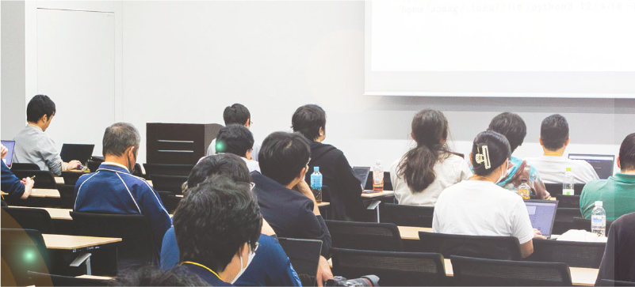

Pythonistaのための
技術カンファレンス、
Pythonを語り、
コミュニティを築く。
PyCon mini 東海 2025
は、昨年に引き続き名古屋市で開催される、Pythonコミュニティのための技術カンファレンスです。全国各地からアクセスしやすい東海地方を舞台に、Pythonに関する最新情報の共有と、日本各地のPythonistaが交流を深められる場の提供を目指しています。
ぜひこの機会に名古屋でPythonの魅力に触れ、新しい知識と交流を深めていただければ幸いです。皆さんのご参加を心よりお待ちしております。
| 2025 年 11 月 8 日 （土） | |
| 中日ホール&カンファレンス | |
| 主催: PyCon mini 東海 実行委員会 | |
| 共催: 一般社団法人PyCon JP Association | |
Workshop


Talk
Presenter


Our 2024
event
track
record
来場者数
53名
※スポンサー、スタッフなど関係者を含む

昨年の感謝を胸に、
今年はもっと。
PyCon mini 東海 は昨年初めて開催されました。
昨年の開催状況を本イベントの座長（りょう）がブログで公開しています！
昨年はスポンサー様のご支援により、豪華なお弁当やコーヒーサービス、
抽選会などを実施することができました。関係者の皆様に心より感謝申し上げます。
会場の雰囲気や発表概要などに興味がある方は、ぜひこちらからブログをご覧ください！
ACCESS
会場案内
電車でお越しの方
名古屋市営地下鉄東山線・名城線「栄」駅または名鉄瀬戸線「栄町」駅から「栄 森の地下街」13番出入口直結

車でお越しの方
周辺の駐車場・駐輪場をご利用ください
| 会場 | 中日ホール&カンファレンス |
|---|---|
| 住所 | 愛知県名古屋市中区栄4-1-1 中日ビル6F |
中日ビル入館後、エスカレーターまたはエレベーターにて6Fにお越しください。 アクセスの詳細は中日ホール&カンファレンスのWebサイトをご覧ください。
KEYNOTE
キーノート

村橋 究理基
愛知県一宮市（旧尾西市）出身。1990年生まれ。 愛知県立津島高校を卒業後、2010年に北海道大学に入学。 理学部地球科学科、 大学院理学院 宇宙理学専攻と進学し、 数値シミュレーションを用いた火星気象に関する研究に取り組んでいたが、 博士課程に7年半も在籍し、トータルで14年近くの学生生活を過ごす。 オーバードクターしつつベンチャー企業などに勤め、 業務の中で地球の気象データや地図データの処理などのためにPythonを活用。 博士の学位取得後2024年3月より松江工業高等専門学校 情報工学科の助教に着任。 着任直後からオープンソースカンファレンス島根の実行委員長を務めるなど、 ITエンジニアコミュニティに積極的に参加している。Twitter (@mkuriki_) がたまにバズる。
TIMETABLE
タイムテーブル
※タイムテーブルは左右にスクロールできます。
SPONSOR
スポンサー
本イベントの開催にあたり、金銭的な支援などをいただいたスポンサーの皆さまを紹介いたします。
Gold スポンサー
株式会社ビープラウド

株式会社ビープラウドはソフトウェア開発のプロフェッショナル集団です。
2008年にPythonを主言語として採用し、コミュニティ活動など、技術の研鑽に積極的なPythonエンジニアがより力を発揮できる環境作りに努めています。
事業は受託開発と自社サービス開発・運営の両輪で展開しており、自社サービスはPython独学プラットフォーム「PyQ」・エンジニアをつなぐIT勉強会プラットフォーム「connpass」・システム開発のためのドキュメントサービス「TRACERY」を開発・運営しています。
研修事業や技術書籍執筆など、蓄積した技術・ノウハウの発信にも力を入れています。全社員フルリモート採用で、日本全国からの採用を受け付けています。
一般社団法人Pythonエンジニア育成推進協会
Python試験とデータ分析試験を運営しております。両試験とも経済産業省ガイドラインITSSや厚生労働省給付金対象講座の指定試験になっています。 Python試験とデータ分析試験ともに上位試験である実践試験を行っており、仕事で使うならここまでを押さえてほしいを問う試験として大変人気の試験になっております。 Pythonやデータ分析の学習のチェックにご利用ください。
特別スポンサー

スポンサー募集中
本イベントの開催にあたり、イベントの運営を支援していただける企業スポンサーを募集いたします。
募集資料を 6/14 (土) に公開いたしました。 詳細は
PyCon mini 東海 2025 企業スポンサー募集資料
をご覧ください。
STAFF
スタッフ
PyCon
mini東海はボランティアスタッフによる活動で運営されています。
開催準備・運営に興味や質問のある方は、下記のお問い合わせのメールアドレスへ連絡してください。


CODE OF CONDUCT
行動規範
PyCon mini 東海 2025のすべての参加者 (参加者、発表者、スタッフ、スポンサーなどを含む) は、PyCon mini 東海 Code of Conductを守る必要があります。